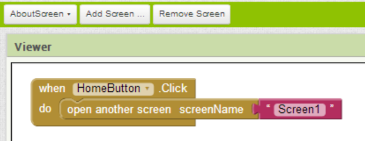
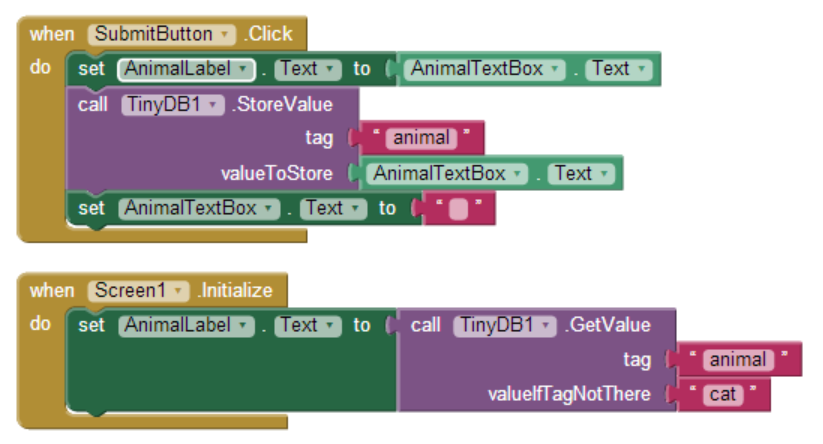
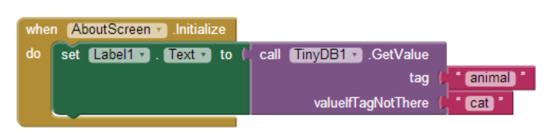

You can create apps with multiple screens. The most common purpose is to have an about or splash screen which introduces the app. The components and variables in one screen are not available to another. To share information between screens, use a TinyDB component as there is only one underlying database that all TinyDB’s connect to. Go through and build the following sample app. You can also download a multi-screen starter app (.aia) here
Create a new app. Add a new screen by clicking on “Add Screen…” in the top menu and name it “AboutScreen." Add a menu bar at the top. Add a HorizontalArrangement at the top of the screen and place two buttons in it, one with text “Home” and one with text “About”. Screen1 is “Home”, so make the “Home” button click event open up Screen1. The block “open another screen” is in the control folder as shown below.
Now select “Screen1” and create a copy of the menu bar from the other screen (you have to recreate everything for each screen). Program the “AboutButton.Click” event so that clicking it opens up the AboutScreen.
Add a label, text box, and button to the “Home” screen (Screen1). When the user clicks the button, move the value in the text box to the label, store the value in TinyDB, and clear out the text box. Add a Screen.Initialize event handler in the “Home” screen. In that event handler, get the persistently stored value and place it in the label. Add a label, text box, and button to the “Home” screen (Screen1). When the user clicks the button, move the value in the text box to the label, store the value in TinyDB, and clear out the text box. Add a Screen.Initialize event handler in the “Home” screen. In that event handler, get the persistently stored value and place it in the label.
In the “About” screen, add a Label, and add a Screen.Initialize event handler that gets the persistently stored value from TinyDB and place it in the label.
